CBB research-in-progress talk, draft v1
22 slides · reconstructed from CBB_RIP_talk_v1.pptx (text, images and positions; theme colors approximate)ImputeVAE: what a nucleus can tell you about its cytoplasm
ImputeVAE: what a nucleus can tell you about its cytoplasm
Suchen Zheng
Gerstein Lab
Oct 28th, 2026
CBB RIP Talk
Background
BackgroundBackground
snRNA-seq now dominates brain transcriptomics
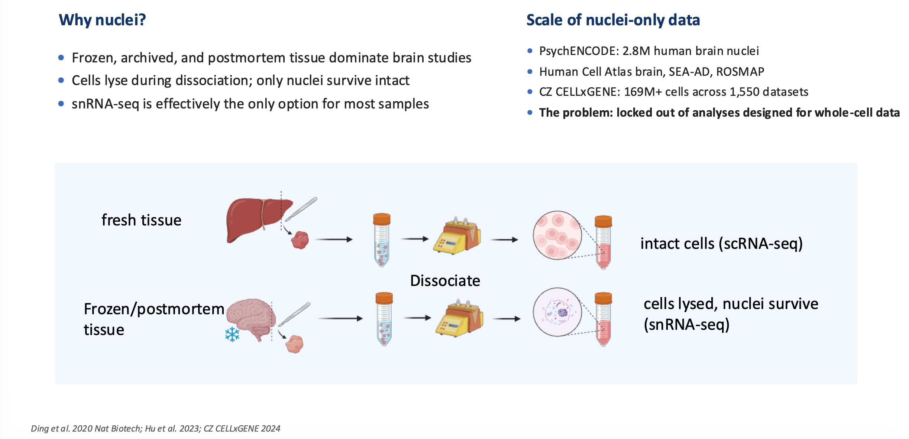
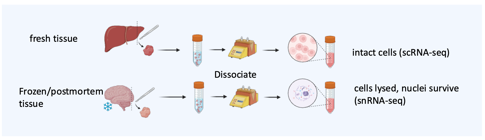
Background
RIP Talk | Background
Background
BackgroundBackground
A nucleus isn't just a smaller cell
Background
Nuclear RNA
Cytoplasmic mRNA
snRNA-seq captures only the nucleus
Gene-specific
Cytoplasmic transcripts are depleted — ribosomal, cytoskeletal, and synaptic-translation mRNAs
Directional
Nuclear RNA is only ~20–50% of total cellular mRNA (Bakken et al. 2018)
Cell-type-dependent
Neurons carry more cytoplasmic mRNA traffic (dendritic transport, local translation) than glia → a larger gap.
RIP Talk | Background
Background
BackgroundBackground
The gap is biological: RNA localization in the brain
Background
Nuclear retention
• Retention is gene-specific and buffers transcriptional noise (Bahar Halpern 2015).
• Neat1 scaffolds paraspeckles; Malat1 is speckle-retained — obligately nuclear (Fox 2018).
Dendritic & synaptic localization
• ~2,550 transcripts localize to the synaptic neuropil for local translation (Cajigas 2012).
• Dendritic transcriptomes are cell-type-specific (Perez 2021).
Compartment maps = ground truth
• APEX-seq subcellular RNA atlas (Fazal 2019).
• lncATLAS CN-RCI · RNALocate — cytoplasmic:nuclear index per gene.
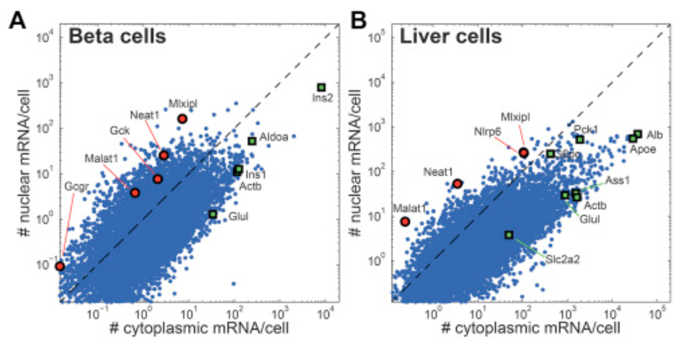
Above diagonal = nuclear-retained; below = cytoplasmic
Bahar Halpern 2015
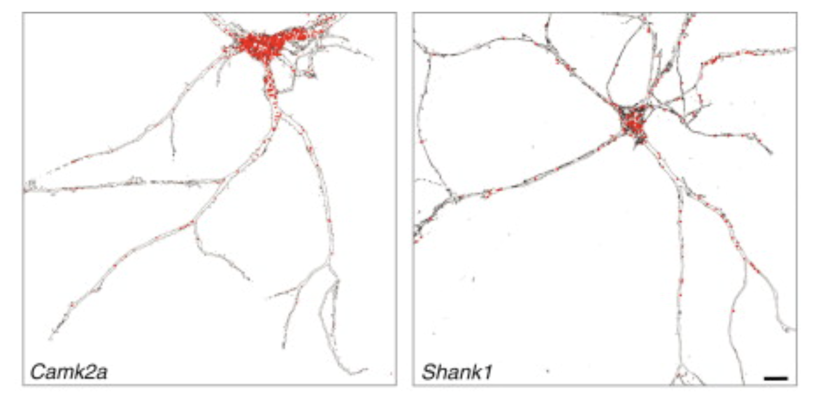
mRNA (red) for the dendritically-localized transcript Camk2a is distributed throughout the dendritic arbor, far from the soma — cytoplasmic RNA that snRNA-seq misses
(Cajigas 2012)
RIP Talk | Background
Existing methods: Batch correction
BackgroundExisting methods: Batch correction
Representative methods: Harmony[1], scVI [2], scANVI [3], Scanorama [4] …
• Batch ⊥ biology — the batch label carries no cell-type or gene-function information
• Effects are unstructured — per-cell noise + global shifts, removable by normalization
• Cross-modal mapping is unsupervised — the model never sees a matched (nucleus, cell) pair
•
Background
scVI/scANVI
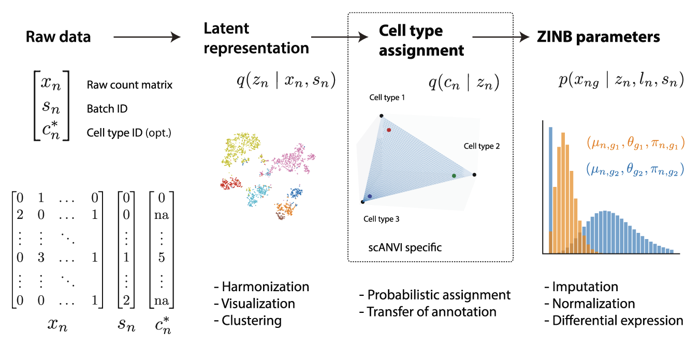
RIP Talk | Background
Limitations:
• Assumes the gap is noise → erases it. Maximal batch-mixing = destroying the nucleus–cell signal.
• Applies a global, unstructured shift — the same adjustment for ribosomal genes and nuclear lncRNAs alike.
• No directed supervision: cannot be asked to “produce the cell version of this nucleus.”
• In practice over-corrects — scVI drives a global downward shift (mean Δ ≈ −1.3), inverting real biology.
Gene
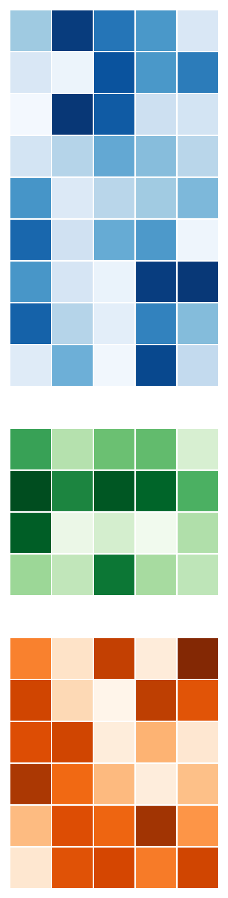
Gene
Cell
[1,1,1,1,1]
modality
Gene
nuclei
[0,0,0,0,0]
modality
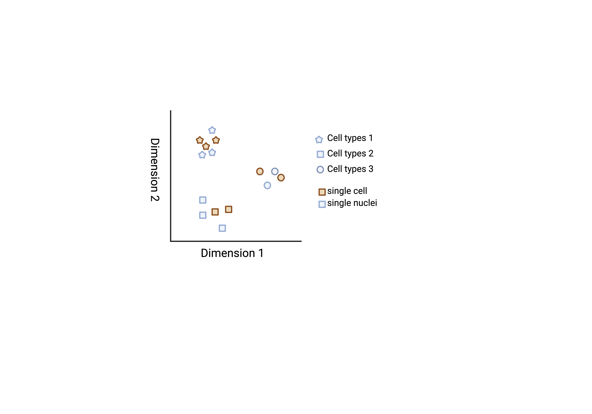
encoder
decoder
Gene
Cell
[1,1,1,1,1]
modality
Gene
nuclei
[0,0,0,0,0]
modality
Learn a shared embedding between cell and nuclei, and generate a different modality when flip the modality condition
Training objective:
Reconstruction loss: preserve within-modality expression
Prior JSD: regularize latent distributions
Alignment JSD: align cell and nucleus latent distributions within cell type
Method
RIP Talk | Method
Proposed Method
MethodsProposed Method
Methods
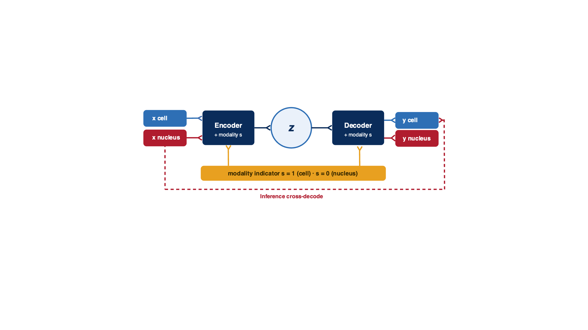
Gene
Cell
[1,1,1,1,1]
modality
Gene
nuclei
[0,0,0,0,0]
modality
Generate a different modality when flip the modality condition
RIP Talk | Method
Benchmark: best label-free translator; with labels, simple methods reach the ceiling
split-aware benchmark, notes/benchmark_review_2026-10-09.md §5bBenchmark: best label-free translator; with labels, simple methods reach the ceiling
Held-out test split of the paired MOp data (split-aware benchmark, 3 seeds). Gene correlation of per-type means.
Method claim: the best translator when no cell-type label is available at inference. With labels, the type mean is the ceiling.
scGen and scButterfly learn a map too; the difference here is the shared latent with a library-size covariate and no label at inference.
split-aware benchmark, notes/benchmark_review_2026-10-09.md §5b
| Setting | Gene corr (test) | Label at inference |
|---|---|---|
| Cell-type mean of real cells (ceiling) | 0.981 | yes |
| scGen | 0.975 | yes |
| ImputeVAE, predicted type (covariate model) | 0.962 | no |
| ImputeVAE, no labels anywhere | 0.921 | no |
| ImputeVAE, no covariate (July model) | 0.900 | no |
| scVI / scANVI, label-free | 0.86 | no |
1. Internal fidelity
Validation roadmap1. Internal fidelity
Does the model recover empirical cell-minus-nucleus shifts in matched mouse MOp validation set?
Allen mouse MOp: predicted and empirical cell-minus-nucleus shifts are strongly concordant.
2. Annotation-based plausibility
Are recovered shifts biologically meaningful rather than generic expression inflation?
Test whether recovered shifts follow expected nuclear/cytoplasmic/synaptic protein-gene programs using SynGO, TF, nuclear-retained lncRNAs, and localization resources.
3. Orthogonal assay
Do independent assays support related biological directions?
Test whether independent assays support the same directional biology while respecting assay-specific measurements.
Validation roadmap
Validation: Biological validity of recovered shifts
Does the model recover empirical cell-minus-nucleus shifts in matched mouse MOp data?
Validation 1: internal fidelityDoes the model recover empirical cell-minus-nucleus shifts in matched mouse MOp data?
Allen mouse MOp: predicted and empirical cell-minus-nucleus shifts are strongly concordant.
Validation 1: internal fidelity
Biological Validity 1: Internal fidelity
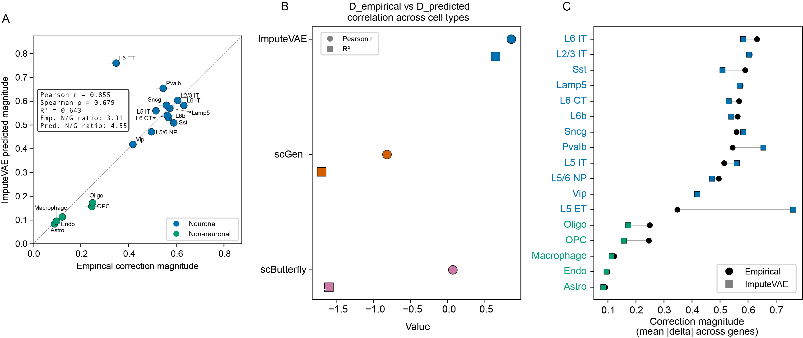
| Metric | Result |
|---|---|
| Predicted vs empirical shift | delta corr 0.95; sign agreement 0.94 |
| Correction magnitude | neurons 4 to 5x glia |
Dataset 1: SynGo (https://www.syngoportal.org/)
Validation 2: gene setsDataset 1: SynGo (https://www.syngoportal.org/)
This database describes the function and subcellular location of synaptic proteins using Gene Ontology (GO) annotations.
Current release 1.3 describes 5076 annotations for 1789 unique genes.
Hypothesis:
Koopmans et al., 2019, Neuron. PMID:31171447.
JASPAR CORE TF motifs: Baydar Ovek et al., Nucleic Acids Research, 2026;54(D1):D184-D193. doi:10.1093/nar/gkaf1209.
Validation 2: gene sets
Biological Validity 2: Annotation-based plausibility
SynGO genes should show neuron-enriched imputation, and ImputeVAE should recover this pattern.
Dataset 2: JASPAR TF gene set (https://jaspar.elixir.no/)
JASPAR CORE vertebrate/mouse transcription factor motifs
Sequence-specific DNA-binding transcription factors with curated motif support
371 mouse CORE motif entries, 211 TF annotations
63 non-ribosomal TFs after filtering
Hypothesis: If ImputeVAE is not simply applying a global expression correction, JASPAR TFs should show smaller or distinct cell-minus-nucleus shifts than SynGO genes.
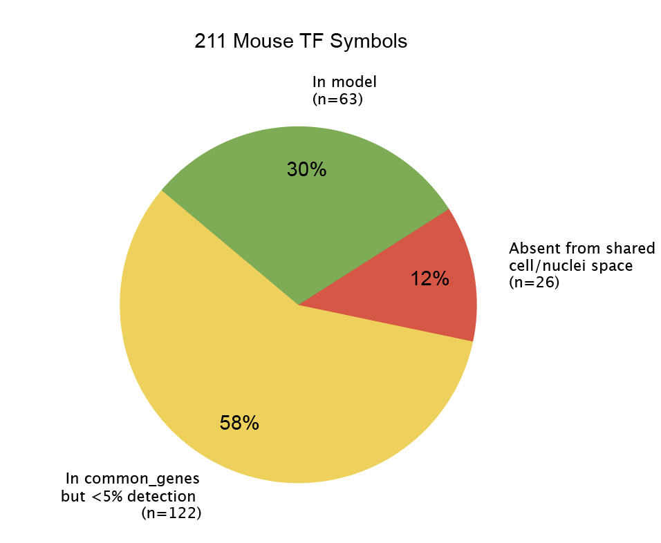
SynGO gene shifts are recovered with near-unity slope
Validation 2: resultsSynGO gene shifts are recovered with near-unity slope
Validation 2: results
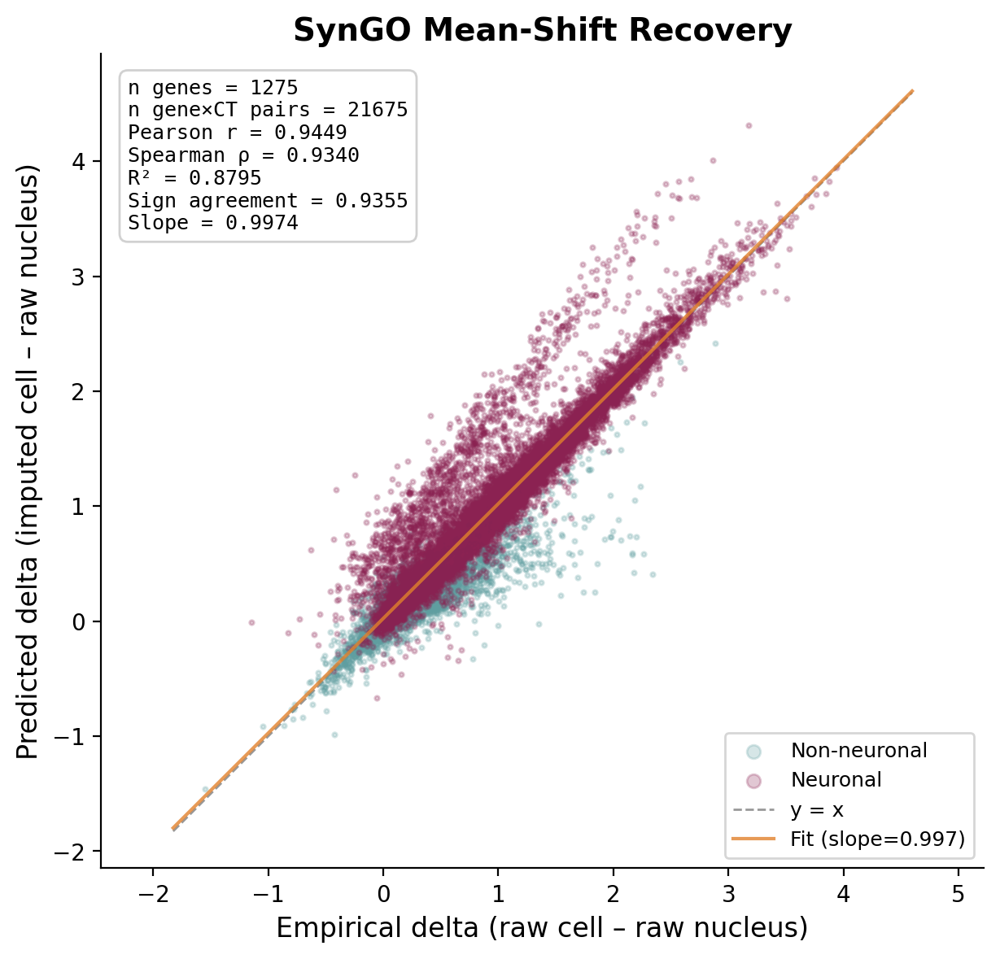
For every gene and every cell type:
Empirical delta = mean(raw cell) - mean(raw nuclei)
Predicted delta = mean(imputed cell) - mean(raw nuclei)
- 1,275 SynGO genes, and 17 cell types,
• we have 21,675 gene-cell-type pairs.
- Pearson r = 0.9449; Spearman rho = 0.9340.
- R2 = 0.8795; sign agreement = 0.9355.
- Slope = 0.9974, consistent with well-calibrated mean shifts.
Biological Validity 2: Annotation-based plausibility
Validation 2: results
Validation 2: results
Validation 2: results
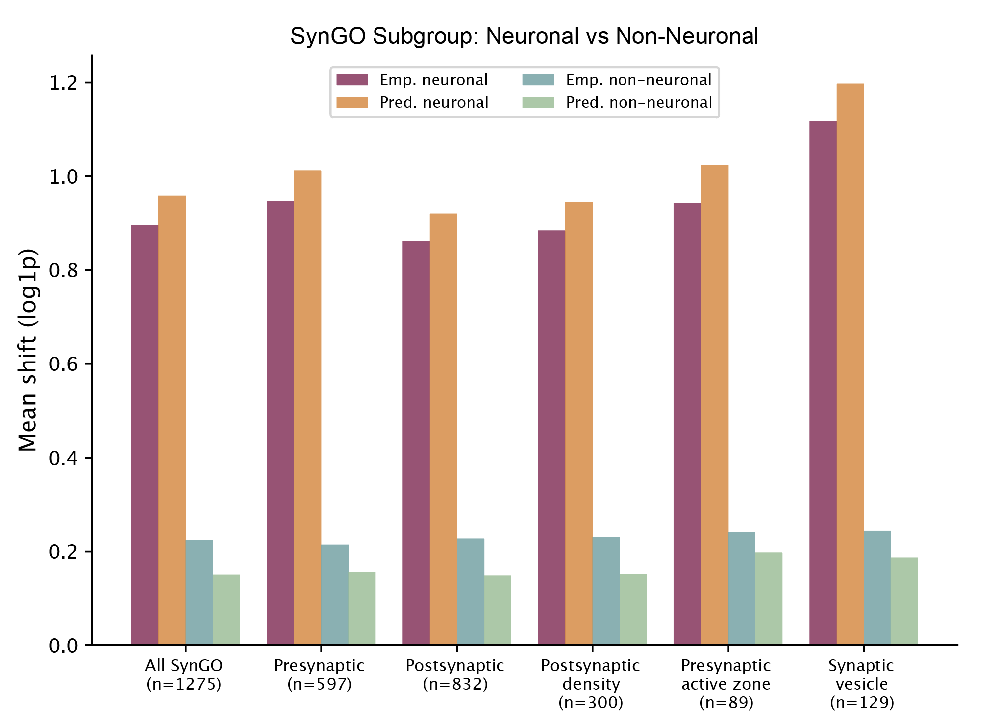
• Result: Neuronal shifts are consistently larger across presynaptic, postsynaptic, active-zone, and vesicle subgroups.
• Caveat: SynGO is protein-location/function annotation, not direct RNA localization.
Biological Validity 2: Annotation-based plausibility
Validation 2: results
Validation 2: resultsValidation 2: results
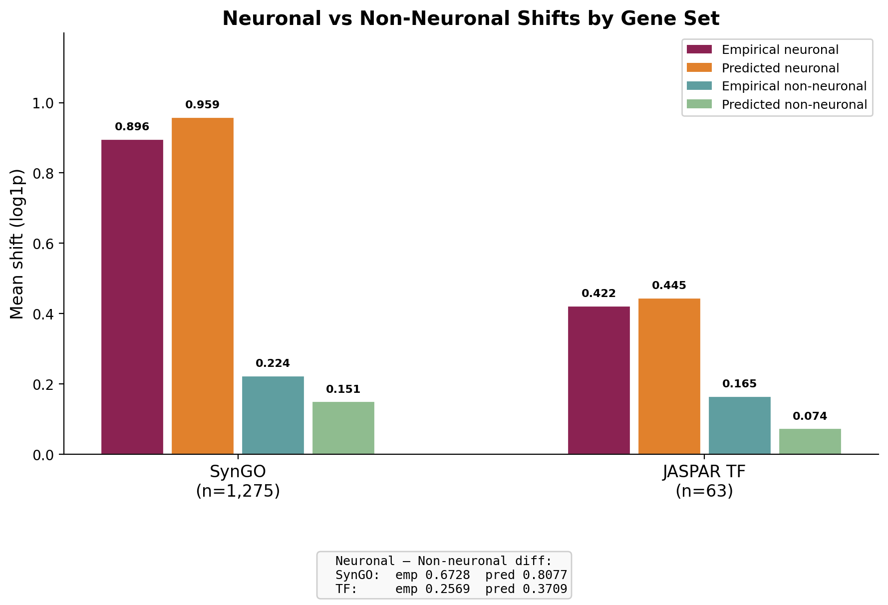
• SynGO Shows Stronger Neuronal Enrichment Than TFs
Biological Validity 2: Annotation-based plausibility
What TRAP / RiboTag measures
Validation 3: orthogonal assay. GSE133291, GSE172484, GSE202172, GSE141337, GSE141874, GSE139684, GSE99791, GSE211162, GSE263082, GSE77243What TRAP / RiboTag measures
A tagged ribosomal protein is expressed in one cell type inside intact tissue; tagged ribosomes are pulled down and the bound mRNA is sequenced. No dissociation, no nucleus / cell split. Ribosome-bound mRNA is cytoplasmic by definition.
Why it is a fair reference
Never entered training; population-level, so it tests the cell-type-level claim; nine datasets from at least six labs, other cortical regions.
The comparison
Map each external population to a training cell type. Correlate (Spearman, 7,700 to 8,700 genes) the external profile with three per-type pseudobulks: raw nuclei, nuclei imputed by the model, real whole cells. Real cells set the ceiling. Gene and replicate bootstraps.
17 populations: pan-excitatory, L5a, three L5b lines (two from motor cortex), Pvalb, Sst, Vip, Htr3a interneurons, astrocytes, oligodendrocytes.
Validation 3: orthogonal assay. GSE133291, GSE172484, GSE202172, GSE141337, GSE141874, GSE139684, GSE99791, GSE211162, GSE263082, GSE77243
Biological Validity 3: Orthogonal assay. Ribosome-bound RNA from genetically defined populations
Imputed nuclei reach the real-cell ceiling in all 17 populations (median gap closed 0.99; every bootstrap CI excludes zero), for excitatory, inhibitory and glial types. Glia sit lower because the reference itself is lower.
Validation 3: result. validation/trap_ribotag_external_validation/outputs/report/extension_newer_datasets.mdImputed nuclei reach the real-cell ceiling in all 17 populations (median gap closed 0.99; every bootstrap CI excludes zero), for excitatory, inhibitory and glial types. Glia sit lower because the reference itself is lower.
Caveats: ribosome-bound RNA is translation, so this supports direction and rank; and at pseudobulk level every method ties (CT-mean, scVI, scGen, scButterfly within 0.03), so this validates the shift, not the model over baselines.
Validation 3: result. validation/trap_ribotag_external_validation/outputs/report/extension_newer_datasets.md
Imputation closes the nucleus-to-cell gap to external ribosome-bound profiles in every population
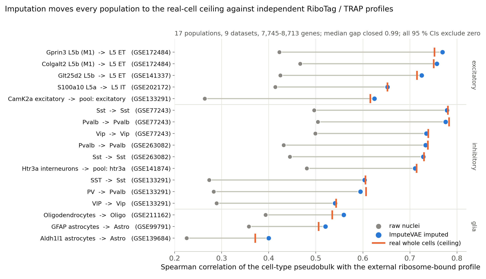
Known limitation: within-type variance after imputation is 15 % of real cells. Collapse, or scale change?
pre-qual slide p28 (May 2026) + variance_rank/README.mdKnown limitation: within-type variance after imputation is 15 % of real cells. Collapse, or scale change?
The concern (Prashant, Sep 2026)
A model that assigns nearly the same value to every cell would also show low variance: every gene would end with a similar low variance.
The test
Per cell type and gene: within-type variance in real cells, raw nuclei and imputed cells (log1p scale, genes detected in > 1 % of cells).
Readouts: the distribution of per-gene variances, and the Spearman rank correlation of each gene's variance in real cells against imputed cells. Reference: the same correlation for real cells vs raw nuclei.
Prediction
Uniform flattening: narrow imputed distribution, slope near zero. Scale change: ranks and shape kept.
pre-qual slide p28 (May 2026) + variance_rank/README.md
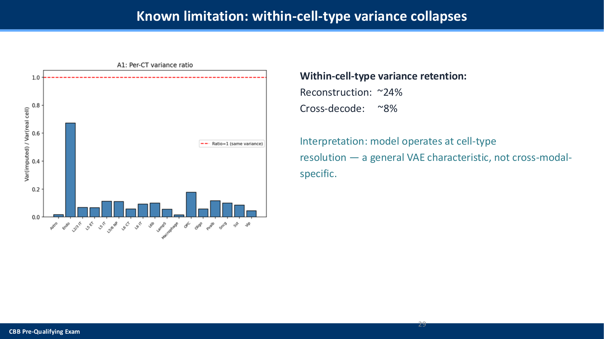
The ranks are kept and the distribution is stretched: a scale change, not a collapse
notes/experiments/variance_zero_nonzero_fullmodel/variance_rank/ (2026-09-24)The ranks are kept and the distribution is stretched: a scale change, not a collapse
L5 IT: medians 0.39 (cells) / 0.21 (nuclei) / 0.08 (imputed). Spearman of per-gene variance, real vs imputed, 0.92, above the nucleus reference 0.72; 0.80 after removing Poisson and library-size variance. Low-variance genes are compressed most (ratio 0.02 below 10 % detection, 0.35 above 70 %). Same in Oligo (0.93) and 14 of 17 types.
So the loss is a scale change on sparse genes, not flattening. What remains has the right ordering; its structure is the real problem, next slide.
notes/experiments/variance_zero_nonzero_fullmodel/variance_rank/ (2026-09-24)

What a nucleus can and cannot tell you about its cytoplasm: type identity plus RNA content
notes/experiments/variance_zero_nonzero_fullmodel/ (latent_usage, F9), libsize review §6.7What a nucleus can and cannot tell you about its cytoplasm: type identity plus RNA content
Only 6 of 32 latent dimensions are used; one of them is library size and carries 95 % of the imputed within-type variance. Real within-type variance is half Poisson sampling, a quarter RNA content, a quarter biology.
With RNA content as an explicit decoder covariate (the reported model), 2 identity dimensions still place 15 of 17 types. At 10x depth a nucleus determines its type-level cytoplasm and its RNA content; individual-nucleus cytoplasm beyond that is below the sampling ceiling. The variance losses proposed in August were dropped: they would fit noise.
notes/experiments/variance_zero_nonzero_fullmodel/ (latent_usage, F9), libsize review §6.7
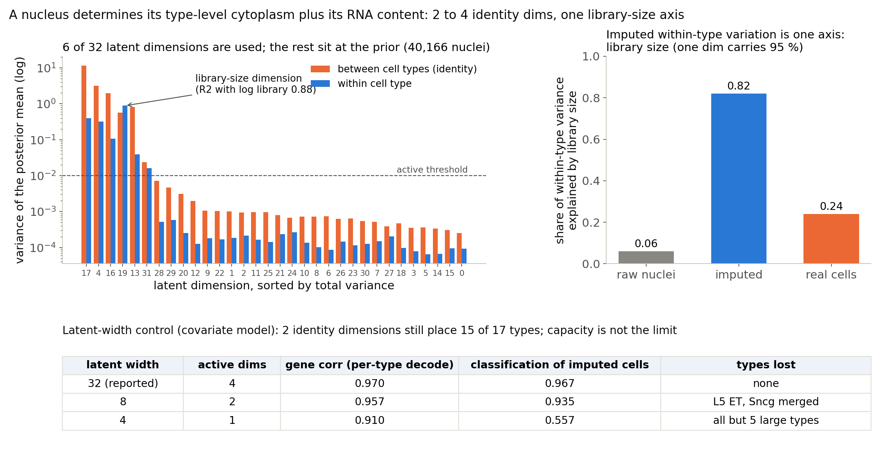
Generalisation: unseen chemistry and an independent matched hold-out, with the ceiling and the baseline
libsize review §6.4a; notes/experiments/bakken2018_holdout/README.mdGeneralisation: unseen chemistry and an independent matched hold-out, with the ceiling and the baseline
Left: on 10x v2 the July model fell to 0.59; with the explicit output scale and a label-free type assignment the covariate model reaches 0.90 (0.93 with the label). Right: Bakken 2018 SMART-seq, the only public matched mouse cortex set outside Allen 10x: direction at the split-half ceiling, magnitude r 0.58 against a reliability ceiling of 0.92.
The baseline matters: predicting the type and adding its mean training shift scores the same. On external data the model's contribution is the label-free, chemistry-robust type assignment, not extra per-gene accuracy. Zero-shot human M1 and Lake kidney show the same conserved core (ribosomal up, MALAT1 down).
libsize review §6.4a; notes/experiments/bakken2018_holdout/README.md

Open question: which nuclei-only result would change if we applied this?
discussionOpen question: which nuclei-only result would change if we applied this?
Every external test so far is matched by 'predicted type + that type's mean nucleus-to-cell shift'.
So the contribution is a validated, cell-type-resolved compartment map that can be applied label-free and across chemistries. The paper needs one nuclei-only result that changes once it is applied.
Candidates
(a) Cytoplasmic / activity gene recovery (Fos, Arc, ribosomal, Plp1) in an independent snRNA-seq set, checked against matched whole-cell data.
(b) Disease DE on imputed profiles: SCORCH human snRNA-seq, 655k nuclei, HIV vs control, PFC / insula / striatum (on the group share). Does the DE list move toward what whole-cell data show?
(c) Marker-based annotation of nuclei improves after imputation, on external data (0.73 -> 0.96 in the benchmark).
Committee asks since the qual: TRAP / RiboTag done; nuclear lncRNA showcase (Malat1, Meg3; 45 genes, 100 % correct sign) done; subcellular spatial (MERFISH) not started.
Which of these would you find convincing? Is there one I am missing?
discussion
Thank You!
Thank You!